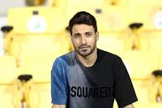

Shoja Khalilzadeh
Iranian footballer
Shojae Khalilzadeh is an Iranian professional footballer who plays as a centre-back for Qatar Stars League club Al Ahli and Iran national team. He is known for his pace, artistic tackles and positional sense. Wikipedia
Born: May 14, 1989 (age 33 years), Behnamir
Height: 1.83 m
Current team: Al Ahli
Number: 3
Position(s): Centre-back